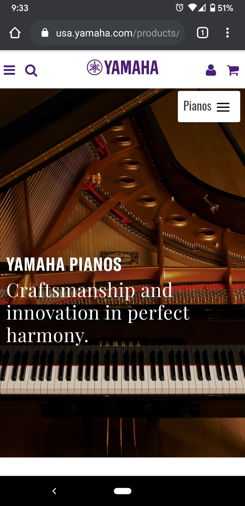

Visual Hierarchy
I chose Yamaha Piano's US site for Visual Hierarchy.
When I look at Yamaha's web site, I am instantly drawn to not just a picture of a paino, but multiple settings of people playing thier pianos. After that I'm drawn to their company name and a great catch phrase of "Craftsmanship and innovation in perfect harmony." Next I find their navigation within the same video area that provides the most common types of pianos link for me to browse the type of piano I would be interested as well as a "Find a Dealer" link. above the snazy video that a user can't help but watch over-and-over thre are some helpful links to downloads, news & events that are helpful if I need a manual or brochures that may help me in my piano quest. Lastly at the top of the page, I see some slightly less exciting links and options. If i am looking for a new piano, they definately set that up so I see the intent and message that Yamaha is trying to place in front of an existing or potential consumer.
Rule of Thrids
I chose Osprey's site forRule of Thirds.
Upon being greeted to Osprey, I see exciting images of adventures and even some of just normal day-to-day activities, but they really sell a walk on the sidewalk. Each image in the main carosale has the main focal point of the image as a third. As I scroll down through the site, I find more and more images that share that same layout. They do a decent job at also throwing in an image or two to help break it up as well that is not using the rule of thirds. I think it helps break up the manotany of the site a bit.
Fitt's Law
I chose Udemy's site for Fitt's Law.
There were a number of apps that I could think of for this one. I really liked Udemy's site because it keeps a list of the classes that I've worked on recently and makes it easy for me to just click adn continue where I left off. The controls are also set so the play button is larger and they use standard actions for their controls, which is nice. Their layout inside the course actually es a pretty good example of Divine Proportions.